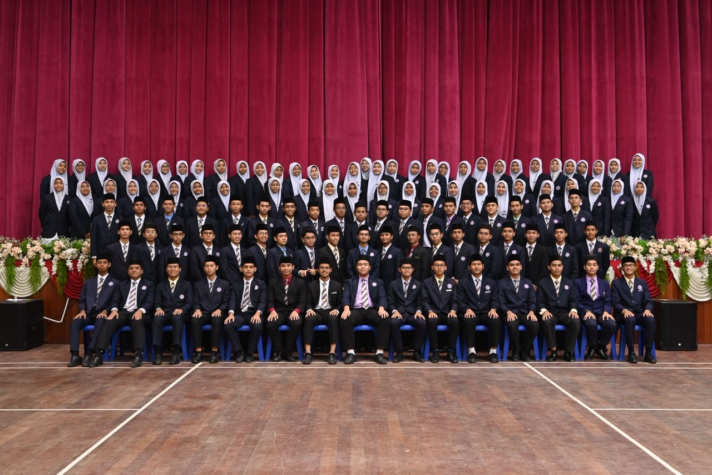

Pasti As-Shariff
Keningau, Sabah
Every school holds a different chapter of my story.

FEATURED CHAPTER
A story of growth, change and unforgettable experiences across different schools and stages of life. Every classroom became a chapter, and every school became a memory worth keeping.

Every story has a beginning, and this was mine.

Where some of my earliest school memories were made.
A new chapter filled with new experiences.
A place that balanced academic and religious learning.
Returning to familiar grounds with new memories to create.
The beginning of my secondary school journey.
A chapter that helped me grow and adapt.
One of the most memorable chapters of my school years.
Currently writing the latest chapter of my educational journey.
Keningau, Sabah
Cyberjaya, Selangor
Sepang, Selangor
Salak Tinggi, Selangor
Port Dickson, Negeri Sembilan
Putrajaya
Merbok, Kedah